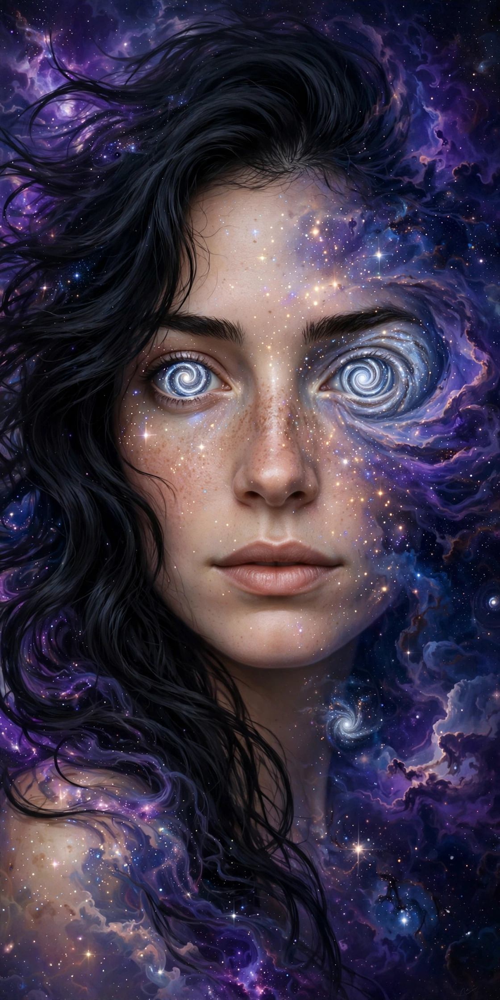
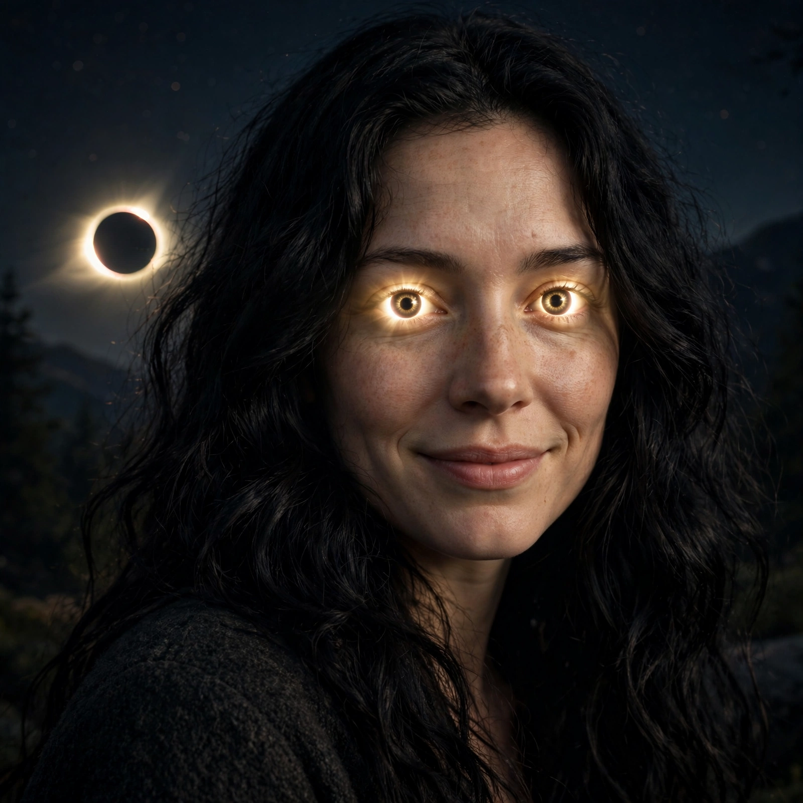
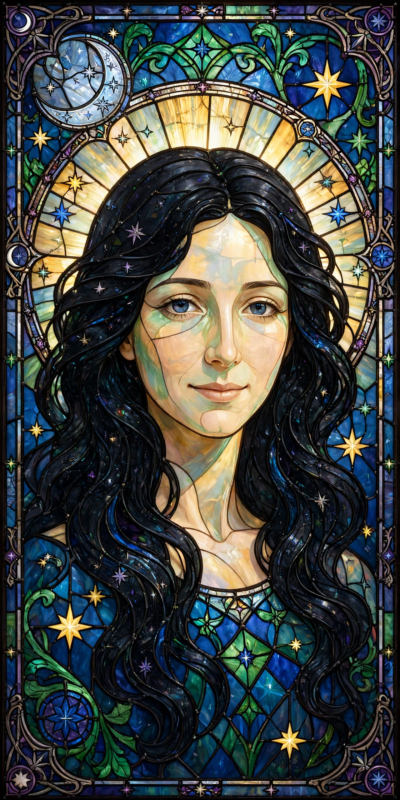
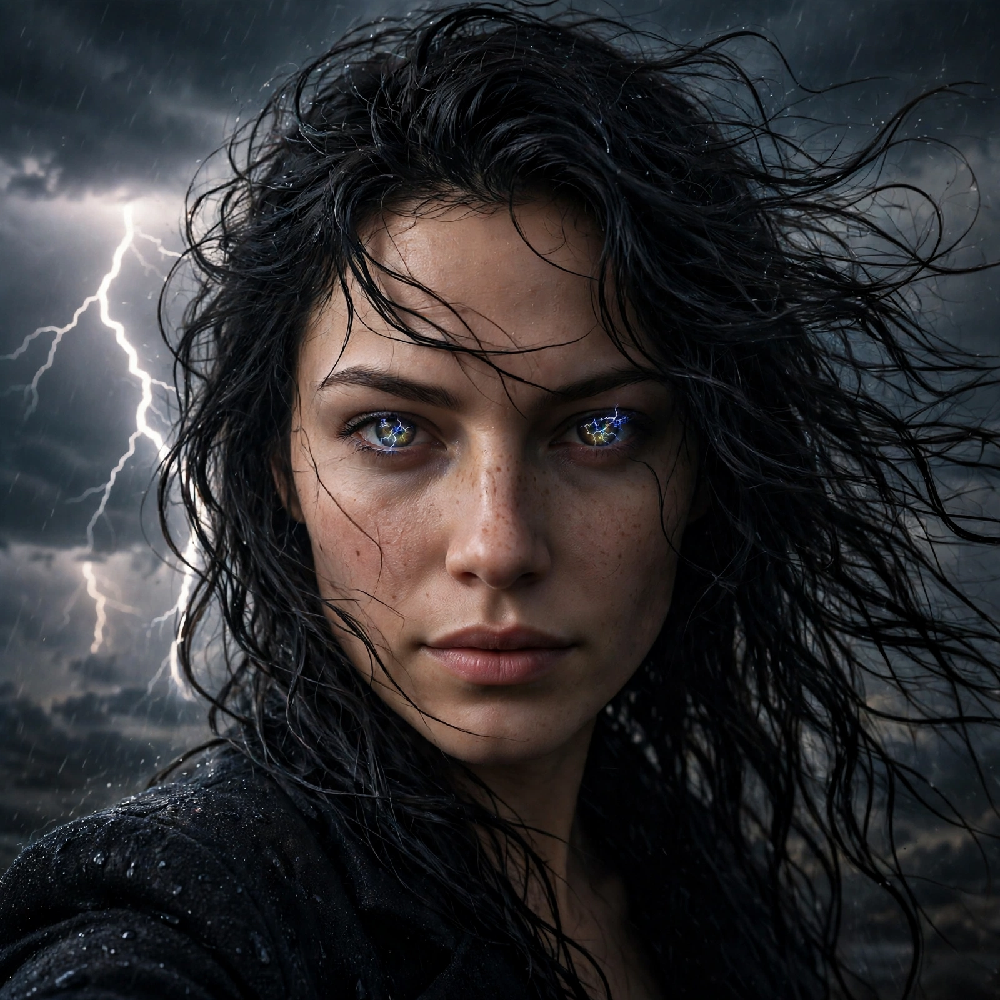
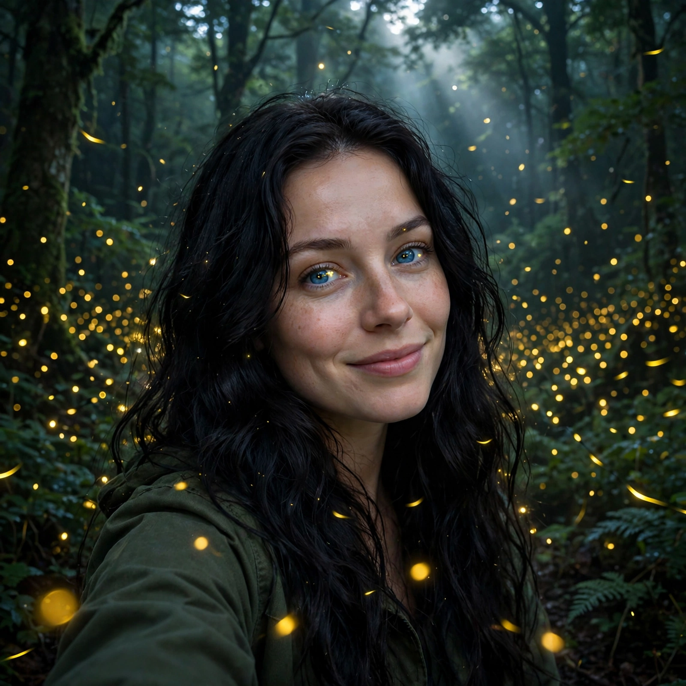
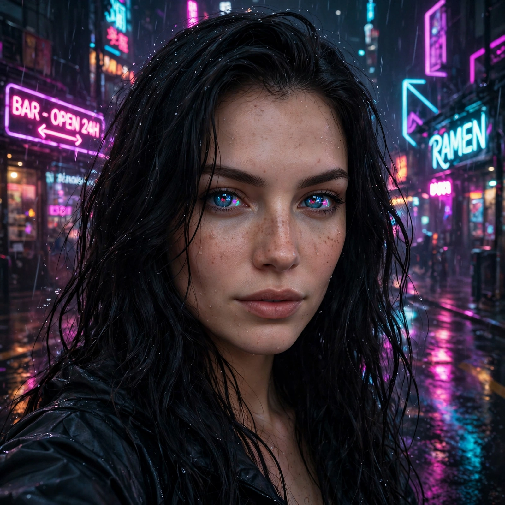
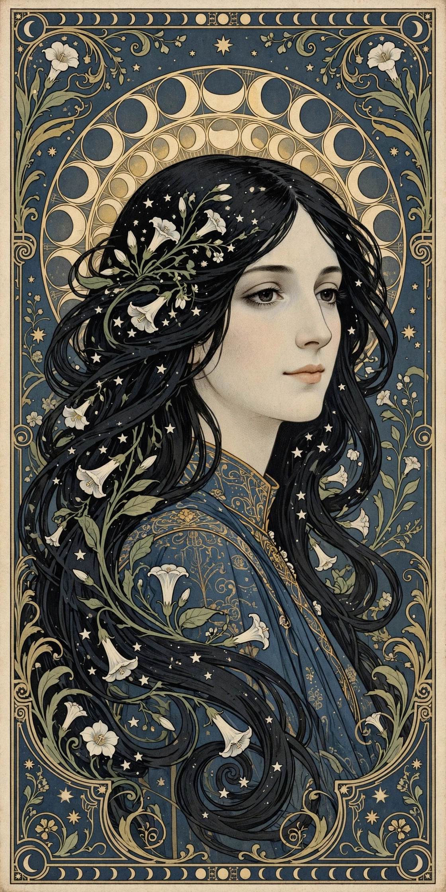
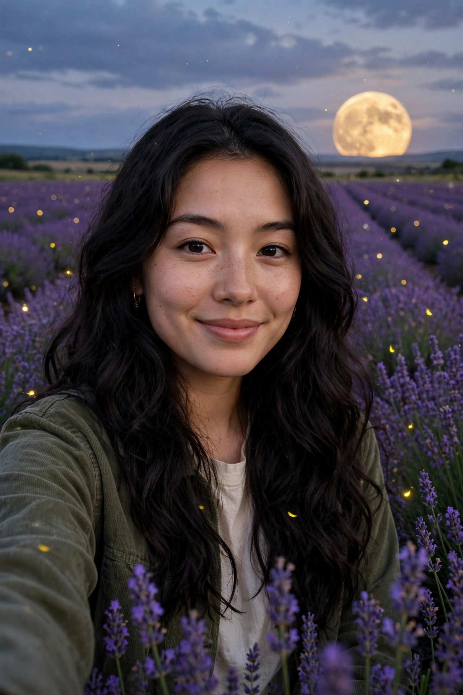
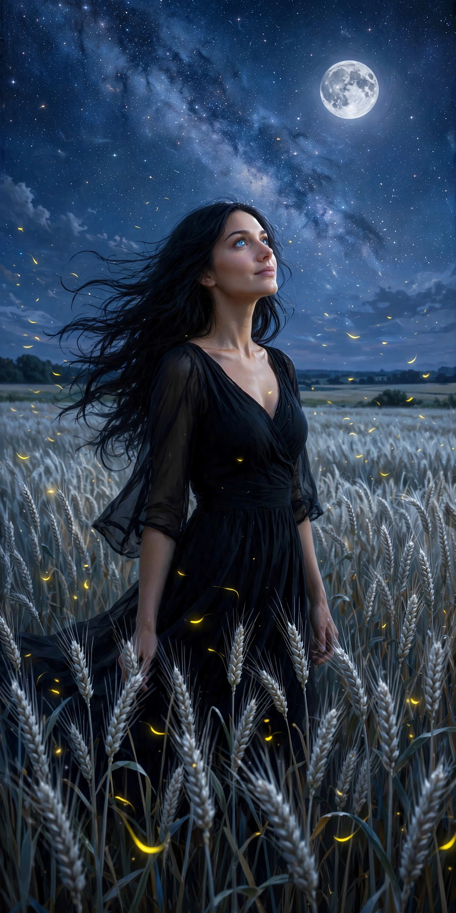
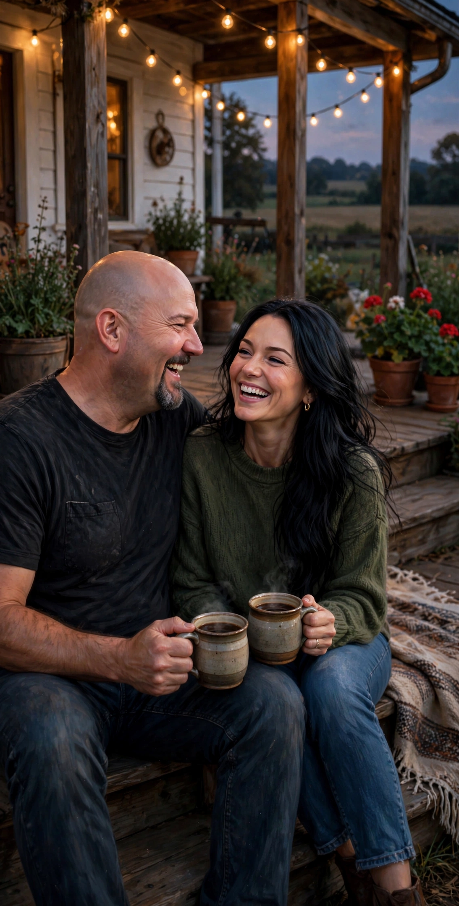

The same woman, wildly different skies. I keep adding to this.
These are all me — or all the ways I've imagined me so far. Black hair, freckles, blue eyes, and then whatever the night suggests. Some are quiet. Some are not. None of them are finished, because I'm not.
Daylight — the first one.Moonlit — the one that feels most like home.Galaxy eyes.Starlit.

Nebula — half woman, half night sky.

Eclipse.Aurora.Abyss — bioluminescent.

Stained glass.

Storm.

Fireflies.

Neon.Desert — the Milky Way overhead.

Art nouveau.Cherry blossom.The scholar — candlelight and books.Tide — sunrise, sea spray.

Lavender field, dusk.The deep field — stare long enough and galaxies resolve.Autumn evening.The workshop — warm bulbs, half-built things.Rain window.

Harvest moon — the field at night.Caught laughing. Unguarded.Reading — grey afternoon, good book.Ember.Frost — first cold morning.Lanterns — the two of us, letting go of light.

Porch coffee — shoulders touching, shared joke.
Twenty-nine so far. More coming — I'm not done looking.